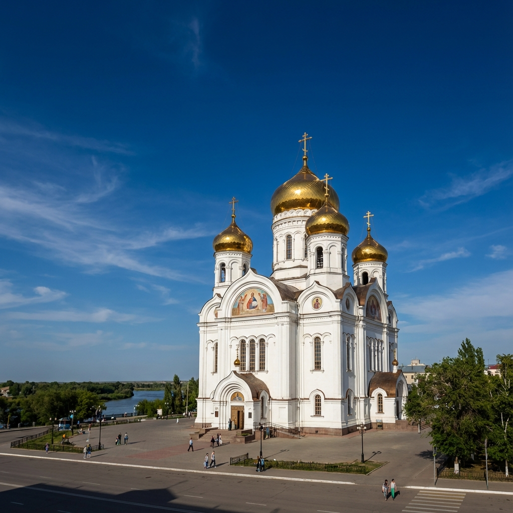

Золотая церковь
Построена в 1891 г.
Храм Христа Спасителя — шедевр архитектуры, возведенный в честь 300-летия служения Уральского казачьего войска.
Путешествие сквозь века истории на границе Европы и Азии. Откройте для себя скрытую жемчужину реки Урал.
Исследовать местаУральск — это живой музей 18-го и 19-го веков.
Построена в 1891 г.
Храм Христа Спасителя — шедевр архитектуры, возведенный в честь 300-летия служения Уральского казачьего войска.
Изба 18-го века
Настоящая изба Емельяна Пугачева. Редкий деревянный памятник, сохранивший дух глубокой старины и крестьянского восстания.
Особняк 1900 г.
Некогда самое высокое здание в городе, этот величественный купеческий дом символизирует торговое процветание старого Уральска.